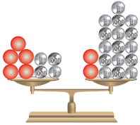
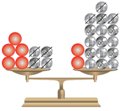
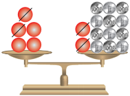
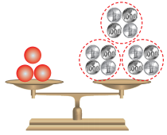

Persamaan Linier Satu Variabel
- Contoh1 & Contoh2 :
- Silahkan baca terlebih dahulu soal pada contoh dibawah!
- Setelah menbaca tekan tombol yang "berborder merah", untuk mengetahui pembahasan selanjutnya
- Contoh3 :
- Silahkan baca terlebih dahulu penyajian masalah pada tabel!
- Setelah menbaca tekan tombol "lanjut", untuk mengetahui pembahasan selanjutnya
1. Tentukan himpunan selesaian dari setiap persamaan linear satu variabel berikut.
3x + 1 = -7
Penyelesaian :
3x + 1 = -7
Kedua ruas sama-sama dikurangi 1
3x + 1 - 1 = -7 - 1
3x = -8
Kedua ruas sama-sama dibagi 3
$\frac{3x}{3}$ = $\frac{-8}{3}$
x = $\frac{-8}{3}$
Jadi, himpunan selesaian dari persamaan 3x + 1 = -7 adalah {$\frac{-8}{3}$}.
2. Tentukan himpunan selesaian dari setiap persamaan linear satu variabel berikut.
$\frac{-3}{5}$p = $\frac{4}{15}$
Penyelesaian :
$\frac{-3}{5}$p= $\frac{4}{15}$
Kedua ruas sama-sama dibagi -3/5
$\frac{-3}{5}$p$\frac{-3}{5}$ = $\frac{4}{15}$$\frac{-3}{5}$
p = $\frac{-3}{5}$$\frac{4}{15}$
p = $\frac{-4}{9}$
Jadi, himpunan selesaiannya adalah {$\frac{-4}{9}$}.
3. Tentukan himpunan penyelesaian dari persamaan linear satu variabel 5m + 4 = 2m + 16.
Penyelesaian :
| Penyajian masalah menggunakan timbangan | Penyajian masalah menggunakan Persamaan |
|---|---|
|

Lima beban berbentuk bola dan empat koin seimbang dengan dua beban berbentuk bola dan enambelas koin. Berapakah berat sebuah bola? |
Timbangan di samping dinyatakan sebagai 5m + 4 = 2m + 16 |
|

Mengambil enam bola di kedua lengan |
Mengurangkan 4 dari kedua sisi [setara dengan menambah (−4) di kedua sisi]. 5m + 4 + (−4) = 2m + 16 + (−4) 5m + 0 = 2m + 12 5m = 2m + 12 |
|

Mengambil dua bola di kedua lengan. |
Mengurangkan 2m di kedua sisi [setara dengan menambahkan (−2m) di kedua sisi] 5m = 2m + 12 5m − 2m = 2m − 2m + 12 3m = 12 |
|

Membagi koin menjadi tiga bagian yang sama. Jadi, setiap beban berbentuk bola sama beratnya dengan empat koin. |
Membagi kedua sisi dengan 3 (setara dengan mengalikan kedua sisi dengan $\frac{1}{3}$ ) $\frac{1}{3}$ 3m= $\frac{1}{3}$ 12 ($\frac{1}{3}$ × 3)m = 4 1 × m = 4 m = 4 Jadi, himpunan selesaiannya adalah {4}. |